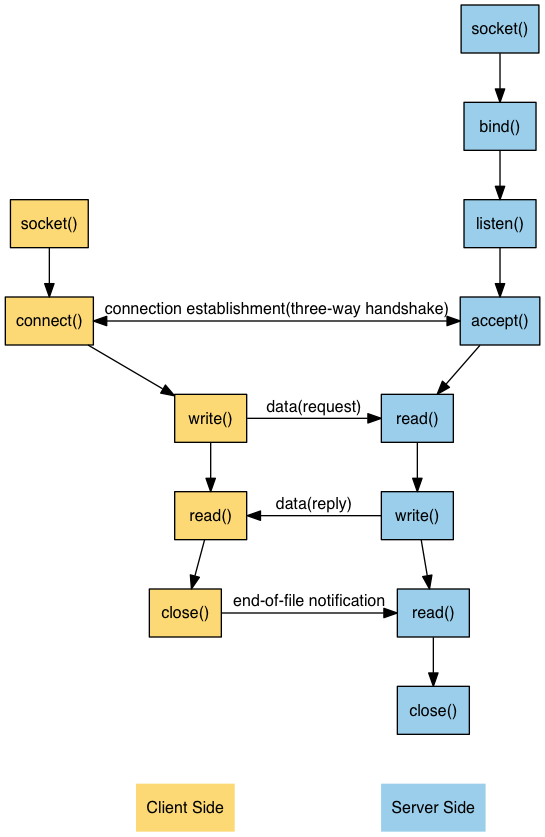

Chapter 4: Elementary TCP Sockets
Table of Contents
Elementary TCP Sockets
Introduction
- 这一章主要介绍基础的来完成TCP client和server所必须要用到的socket function,
下图就是整个交互过程中使用到的函数关系图

socket Function
- 所有网络IO的开始,都是首先使用socket函数,创建的时候,就要指定通信协议的类型
#include <sys/socket.h> int socket(int family, int type, int protocol);
- family 参数有如下选择 (AF_LOCAL是POSIX名字,原来的名字较AF_UNIX)
family Description AF_INET IPv4 protocol AF_INET6 IPv6 protocol AF_LOCAL Unix domain protocol AF_ROUTE Routing sockets AF_KEY Key socket - type 参数有如下选择
type Description SOCK_STREAM stream socket SOCK_DGRAM dtagram socket SOCK_SEQPACKET sequenced packet socket SOCK_RAW raw socket - protocol 参数有如下选择
protocol Description IPPROTO_TCP TCP transport protocol IPPROTO_UDP UDP transport protocol IPPROTO_SCTP SCTP transport protocol - socket函数成功以后会返回一个socket descriptor(非负数), 得到socket descriptor 我们只需要指定IPv4或IPv6,和socket type(stream, datagram), 还没有指定protocol address
AF_XXX Versus PF_XXX
- AF_代表 address family, PF_代表 protocol family. 历史上这样取名的原因是:一个 protocol family设计成可以支持多个address families. 所以PF_用来在socket()函数 里面, 而AF_用在socket address structure.
- 但实际的情况是在<sys/socket.h>里面,所有的PF_都是一一对应AF_的,所以我们在unpbook 里面我们只用AF_,而不用PF_, 虽然POSIX里面是使用PF_
connect Function
- TCP client使用connect来连接远方的TCP server
#include <sys/socket.h> int connect(int socfd, const struct sockaddr *servaddr, socklen_t addrlen);
- connect开始了TCP三次握手,成功了或者error出现,才返回,典型的错误有如下:
- 如果TCP client发出的SYN没有接收到回应,那么ETIMEDOUT就会返回. 比如connect 建立的时候会发出一个SYN, 6秒之后会重发, 24秒之后再重发,如果75秒之后依然 没有反应的话,那么ETIMEDOUT就会返回了
- 如果server给予的返回是reset(RST),那就说明server端虽然机器在线,但是没有相应 的服务开启(我们要求的那个端口号没有开启), 这个时候一个ECONNREFUSED就返回了. 这个错误被看作是一个hard error在RST被收到的同时就马上返回
- 如果SYN产生的反应是ICMP "destination unreachable"(通常是从路由器返回的),那 么这个会被认为是一个soft error.因为destination unreachable通常情况下只是一个 暂时的情况(比如路由器错误).对付ICMP destination unreachable的方法和上面的 条款1一样:重发SYN多次如果75秒以后依然不成功,那么就返回EHOSTUNREACH.(需要注意 的是ENETUNREACH是被弃用的errno,如果出现,其应当做EHOSTUNREACH处理.
- 从状态图上来看, connect在发送完SYN之后就从CLOSED到了SYN_SENT, 在接收成功的ACK 之后就到了ESTABLISHED.
- 如果connect 失败了,我们一定要close()这个socket, 然后重新从socket调用开始.
bind Function
- bind functio是把当前的local protocol address付给socket. 所谓local protocal
address 就是一个IP地址(IPv4或者IPv6) + 一个TCP或者UDP 端口号
#include <sys/socket.h> int bind(int sockfd, const struct sockaddr *myaddr, socklen_t addrlen);
- 首先明确一点: bind的作用,是设置自己的socket的地址, server可以设置,同样client 也可以使用bind!
- bind的作用有亮点:
- 明确的指出了需要socket和哪个端口号进行"合作", 其实如果你不调用bind的话,内核 会自动赋予你一个临时端口号: client通常都这么做,随便那个端口就好了,但是server 通常都都会调用bind函数,因为server需要让大家知道自己的端口后(端口号一般是某种 服务专有某一个号码), server通常也可以不调用bind,那样的话,其使用了哪个端口,就 随机了.
- 明确的指出了需要socket和哪个IP进行"合作",如果不调用bind的话,内核会自动把当前 数据流出的网卡地址(如果有多个网卡,那就要看哪个能够到达remote server地址, 这个 地址是connect的时候设置的)赋予给socket. 一般来说client端都是不主动bind的,所以 IP地址是kernel赋予的. 而Server端虽然bind,但是一般都是默认不填具体的IP地址(用 0.0.0.0),这个时候kernel会把client端connect设置的目标IP作为server所拥有的socket 的source IP
- 用一个表来描述谁来负责设置具体的数据(IP和端口)
IP address port Result Wildcard 0 Kernel chooses IP address and port Wildcard nonzero Kernel chooses IP address, process specifies port Local IP address 0 Process specifies IP address, kernel chooses port Local IP address nonzero Process specifies IP address and port - bind函数最常见的错误代码是EADDRINUSE("Address already in use")
listen Function
- listen 函数就是只有server端才会调用的了, 有如下两个作用:
- 当socket被socket()创建的时候,它是一个active socket(一个将要调用connect发 起通信的候选者), listen()的作用,就是把它变成一个passive socket: kernel 要允许外来的通信来连接它. 用TCP state 图表的话说就是把state从CLOSED变成了 LISTEN.
- listen的第二个参数表达了kernel允许最多有多少connection可以排队等待当前socket 的眷顾
#include <sys/socket.h> int listen(int sockfd, int backlog);
- 为了理解所谓的"排队"等候被socket眷顾,我们要知道kernel为一个listening的socket
准备了两个队列(queue):
- incomplete connection queue: 从client端已经传过来SYN了,但是server socket 还没有回应. 这些server socket都是在SYN_RCVD状态
- completed connection queue: 已经给client返回了ACK,而且client的ACK也已经 收到(三次握手完成). 这些server socket已经是在ESTABLISHED状态了.
- 当一个SYN从client端传来的时候,TCP会在incomplete queue里面创建一个新的entry, 然后SYN(server) + ACK(for client SYN)给client.
- 当ACK(for server SYN)传回来的时候,entry就可以进入completed queue里面最后一位 开始等待啦.
- 当server开始accept()的时候,从completed queue里面的第一个就会被server锁定啦.当 然,如果completed queue这个时候是空的,那么server就会sleep,直到有entry出现.
- 这个两个queue的设计如此独特,以至于我们对它有如下的条目需要说明:
- 历史上backlog指的是两个queue里面entry的总数
- Berkeley的TCP实现会把backlog加个系数1.5,也就是说如果backlog是5的话, 最多 可以有entry的个数是5*1.5 = 7.5个,也就是8个
- 不要设置backlog为0, 因为有些实现可能认为这个是无限大–并不是拒绝client,拒绝 client的最好方法是close the listening socket
- entry呆在incomplete queue的时间是完成一次三次握手的时间,假设这个三次握手进行 的很顺利(没有丢失segment,没有重传), 那么这个时间就是一次RTT.一般来说RTT的中 位数时间是187ms
- 历史上backlog的设置一直是5,这个数字显然不能适应今天的server. backlog的大小
是一个很敏感的数字,如果我们希望根据不同的情况来动态的调整这个数字,那么在代码
中设置读取"环境变量"是个好主意,因为这样就可以不用重新编译我们的源代码,而且实
现了动态改变backlog的值,我们自己实现的Listen做到了这一点
void Listen (int fd, int backlog) { char *ptr; /* can override 2nd argument with environment variable */ if ((ptr = getenv("LISTENQ")) != NULL) { backlog = atoi(ptr); } if (listen(fd, backlog) < 0) { err_sys("listen error"); } }
- 设置backlog为一个比较大的值的原因比较复杂:
- 历史上的原因通常是因为让server不至于在accept的时候太busy, 也就是说会有 更多的entry在completed queue里面
- 当前的web server则是另外一种情况, 大部分的entry在incomplete queue, 因为 有大量的SYN来访,等待着三次握手的成功.
- 如果queue都已经满了的话, TCP就会直接丢弃后面的来访的SYN, 并且不发送RST. 这是 因为queue满的情况只是一种暂时的状态. 不发送RST的话, client会超时重发SYN,很 可能下一次就会占到地方了. RST是"server不再对应port"的一种反应,而不是"server端 的queue已经满"了的反应
- 在三次握手之后, 但是在server调用accept之前接受的数据,应该被conneted socket的 buffer缓存.
- 所有上述的backlog的猜想都是在unpbook的某一种TCP实现之中的. 在POSIX规范里面,对 上述所有的实现都是加上了"may", 也就是说可以如此实现.但是不强制.我们了解这些backlog 的知识,但是还是要具体事具体分析.
accept Function
- TCP server调用accept函数来得到自己的completed connection queue里面最开始的
那个socket connection. 如果completed queu是空的, 那么process就会进入sleep
(如果我们的socket的blocking socket的话)
#include <sys/socket.h> int accept(int sockfd, struct sockaddr *cliaddr, socklen_t *addrlen);
- 如果accept调用成功,那么返回值就是一个崭新的kernel自动创建的descriptor.这个新 的descriptor叫做connected socket, 而accept第一个参数sockfd代表的socket叫做 listening socket.
- 区别这个两个socket很重要,一般来说server只会创建一个listening socket(负责从 completed queue里面取的entry), 而且会为每一个client创建一个connected socket, 传输完毕的时候,关闭的也是connected socket.
- sockfd是listening socket的fd, 唯一一个输入,输出则是三个(如果不关心后两个,可以
把他们设置为NULL, 第一章的例子很明显了):
- 返回值是一个connected socket descriptor
- cliaddr返回client process的protocol address
- addrlen返回client process的protocol address的长度
- 下面一个例子展示了我们如何使用后两个参数来得到对方client的信息
#include "unp.h" #include <time.h> int main(int argc, char *argv) { int listenfd, confd; socklen_t len; struct sockaddr_in servaddr, cliaddr; char buff[MAXLINE]; time_t ticks; listenfd = Socket(AF_INET, SOCK_STRAM, 0); bzero(&servaddr, sizeof(servaddr)); servaddr.sin_family = AF_INET; servaddr.sin_addr.s_addr = htonl(INADDR_ANY); servaddr.sin_port = htons(13); /* daytime server */ Bind(listenfd, (SA*)&servaddr, sizeof(servaddr)); Listen(listenfd, LISTENQ); for ( ; ;) { len = sizeof(cliaddr); connfd = Accept(listenfd, (SA *) &cliaddr, &len); printf("connection from %s, port %d\n", Inet_ntop(AF_INET, &cliaddr.sin_addr, buff, sizeof(buff)), ntohs(cliaddr.sin_port)); ticks = time(NULL); snprintf(buff, sizeof(buff), "%.24s\r\n", ctime(&ticks)); Write(connfd, buff, strlen(buff)); Close(connfd); } //listening socket will be close at last with exit() }
fork and exec Functions
- 在Unix-like系统中创建process的唯一方法就是fork
#include <unistd.h> pid_t fork(void);
- fork这个函数很有意思,会返回两次(通过返回值是不是0,就可以判断是不是child):
- 在创建成功的child里面返回0, 因为child想知道自己的parent很简单,无论何时都 可以使用getppid()来得知
- 在parent里面返回新创建的child的process ID, 因为一个proces可以有很多child, fork的返回值是唯一可以知道自己child的机会.
- fork通常有两种用法:
- process制作自己的一个替身,去完成某项工作, server通常是这样做的
- process想运行另外一个program. 就要先fork(创建一份完全一样的内存映像),然后 exec来替代(主要是替代映像里面的运行代码),进而执行
- fork是把自己的资源重新复制一遍,只有一些参数和父进程不一样.通过这种方式来创
建新的进程.因为fork之后往往是进行exec()新的进程, 所以还有一个copy-on-write
技术:
- 所有的资源在fork之后都是只读的, 如果资源被写入了,那么就会有一份新的数据产生.
- 但是fork之后大部分是exec(), 所以就不用产生新的数据了.
- 这极大的提高了效率:因为fork的时候,资源不用完全赋值一遍了,只要让他只读就好.exec() 之后取消这个只读就行了,新的process会完全抛弃老的资源的
- exec系列函数一共有六个,只是参数不同,其实原理一样,就是在当前的process里面运行新的main
函数. 有错误,exec才会返回给caller.否则不返回.
#include <unistd.h> int execl(const char *pathname, const char *arg0, .../* (char*) 0 */); int execv(const char *pathname, char *const argv[]); int execle(const char *pathname, const char *arg0, ... /* (char *)0, char *const envp[] */); int execve(const char *pathname, char *const argv[], char *const envp[]); int execlp(const char *filename, const char *arg0, .../* (char *) 0 */); int execvp(const char *filename, char *const *const argv[]);
Concurrent Server
- 下面我们就来看看用fork来组织的server
pid_t pid; int listenfd, connfd; listenfd = Socket(/*...*/); Bind(listenfd, /*...*/); Listen(listenfd, LISTENQ); for ( ; ;) { connfd = Accept(listenfd, ...); if ((pid = Fork()) == 0) { /* child closes listenindg socket as this listenfd is copied from parent, ref count will be 2, this close minus it to 1, and the parent copy will be used normally. */ Close(litenfd); doit(connfd); /* process the request */ Close(connfd); /* done with this client */ exit(0); /* child terminates */ } /* parent closes connected socket as this connfd is copied to child, ref count will be 2, this close minus it to 1, and the child copy close will finally cause the four-way wave */ Close(connfd); }
- 从上面的例子我们可以看到connfd被close了两次(其实listenfd也被close了两次,只 是不明显,而且原理和connfd一样). 那为什么第一次close不会导致tcp触发"四次挥手" 呢: 因为fork的时候会把socket descripto的reference加一. 四次挥手是在reference 为0的时候, 每次close减一,最后一次close的时候才会触发"四次挥手"
close Function
- close 函数是用来把socket标记成关闭, 然后马上返回. close一旦调用socket就无法
在read或者write了, 但是TCP会发送已经queued的数据给对方
#include <unisd.h> int close(int sockfd);
Descriptor Reference Counts
- 前面说了,如果你的descriptor的ref count依然大于0的话, close这个descriptor不 会马上开展"四次挥手", 要到ref count为0的那次close才会发生.
- 如果你force想让"四次挥手"发生,那应该使用shutdown()
- 如果前面的concurrent的例子里面,parent忘了close connected socket,那么会发生
下面两种情况:
- parent会最终耗尽它的descriptor(这个东西操作系统是有限制的)
- 没有一个client connection会真的关闭.因为child close的结果,无非是ref count 从2变成了1.
getsockname and getpeername Function
- getsockname的作用是找到本地protocol address的内容
int getsockname(int sockfd, struct sockaddr* localaddr, socklen_t* addrlen);
- 比如client connect调用之后, 其一般不会调用bind,那么可以通过getsockname来获得己方 的local IP(有好几个IP的情况下,ifconfig不好使哦)和local port number
- 就算server一般会调用bind,但是如果port number指定为了0,那么可以通过getsockname来 获取自己到底用了那个port number
- 如果server一般调用了bind,但是IP设置成了wildcard, 那么可以通过getsockname来看看 自己到底使用了那个ip地址,需要注意的是,要用connected socket(调用accept之后的 descriptor)来做参数, 因为没有connect的话,无法确定使用了哪个IP
- getsockname还能获取socket的address family
#include "unp.h" int sockfd_to_family(int sockfd) { struct sockaddr_storage ss; socklen_t len; len = sizeof(ss); if (getsockname(sockfd, (SA*) &ss, &len) < 0) { return (-1); } return (ss.ss_family); }
- getpeername的作用是找到socket连接的另一方的protocol address的内容
int getpeername(int sockfd, struct sockaddr *peeraddr, socklen_t *addrlen);
- 常见的使用场景是在server端使用exec来调用新的process的时候.accept即便能返 回client的信息,但是这个时候所有的内存都被exec新引入的main函数锁替代了.所 以我们要自己去取得client socket的信息(当然connfd需要一直知道,一个可能的 做法是exec把connfd作为一个参数引入因的程序)